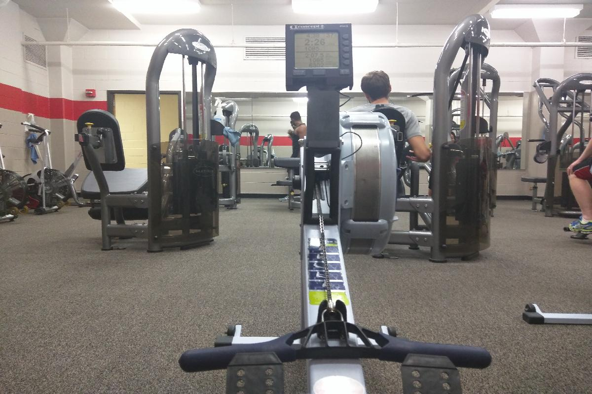
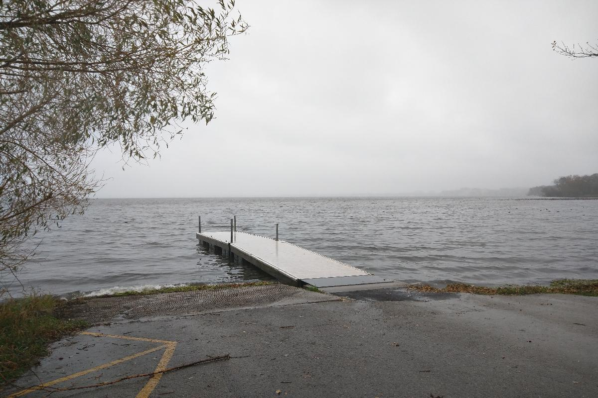
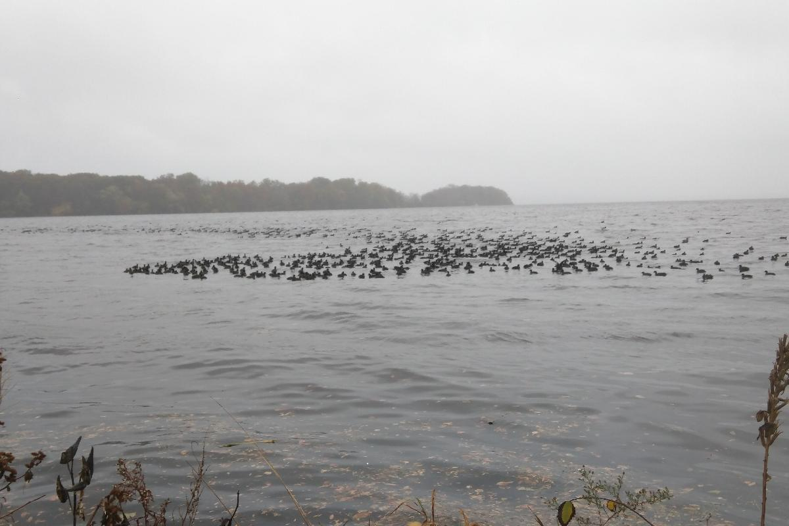
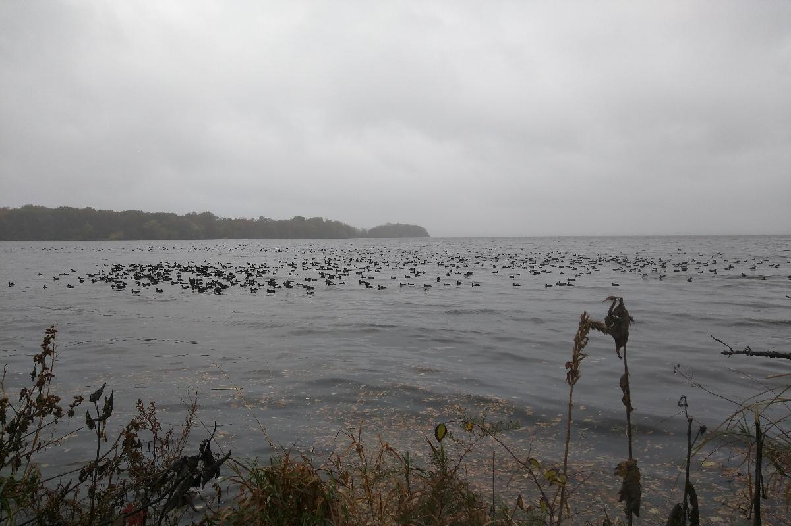

Day 29，Oct 26 2016
环境
- 这两天太阳好像藏起来了，昨日秋风萧瑟，今天阴雨绵绵。学术上没什么进展，但生活中的一点发现让我想了很久。
- 刚来麦屯就发现这里的人很爱跑步。不论年龄，不限时间，或是在Mendota湖边，或是社区小道，总有三五成群的人大步的奔跑，大口的呼吸。开始我觉得这理所当然，毕竟这里风景如画，空气很好，在这种环境中运动的确是一种享受。随着日子一天天过去，我渐渐对这些跑者从心底起了敬意。我开始发现跑步他们的生活的一部分，这种习惯不只局限于大学生，许多中年人，甚至白发苍苍的老者，也在夕阳下日复一日的奔跑。
- 秋去冬来，这一周麦屯也一致阴云密布。萧瑟的寒风夹杂着细密的雨滴，让出门成了件难事，但是这种坏天气，又让我对那些跑者们有了新的认识。午后经过复杂的思想斗争，我终于走上去了体育馆的路。外面细雨绵绵，路上几乎没什么行人，偶尔只有几辆车疾驰而过，当骑到湖边的小道上，我又发现了那些的熟悉的身影。不同的面孔，但依旧是规律的呼吸，大步的奔跑，彷佛今天依旧是一个风和日丽的下午。
- 这幅景象让我十分震撼。加入说日常的运动与坚持只是一种习惯的话，在这种天气中跑步只能是发自内心的坚持了。运动好像融入了他们的血液，成为了生活不可或缺的一部分，而不仅仅是一种选择，或是一种积极的生活态度那么简单。
- 我不由联想到近年来国内各地如火如荼的马拉松活动，以及各种与奔跑、健身、健康生活相关的活动。不知是人们的从众心理还是抱团文化，一个概念在国内总能横行一时，掀起一阵旋风。现在看来，比起鼓励运动、健康生活的初中，这些对人们的生活究竟多少正面的意义呢？压抑的工作节奏下人们依然早出晚归，偶尔PM2.5不爆表的几天能看见零星的人在夜色下跑步，平日运动寥寥的人们却在整个在某一天挤满了整个街区。。。也许只不过是一场又一场喧闹的秀，一场场商业的比拼、装备的展览，或是一种压抑的宣泄。
- 然而，真正的有影响力环境，莫过于那些在阴雨天依旧奔跑在湖边的跑者。
Snapshots

- 学校体育馆Nat的器械室一角。

- 阴雨天的Lake Shore码头，隔案在浓雾间隐约可见。
- 自己选了一个秘密位置，每当路过的时候就在码头这照一张，不同的天气，不同的季节，也许是一个不错的系列。

- Mendota湖上成群的野鸭似乎并不畏惧瑟瑟秋雨，随着潮水在湖面上荡漾。

- 从Low level再拍一张Mendota湖景。